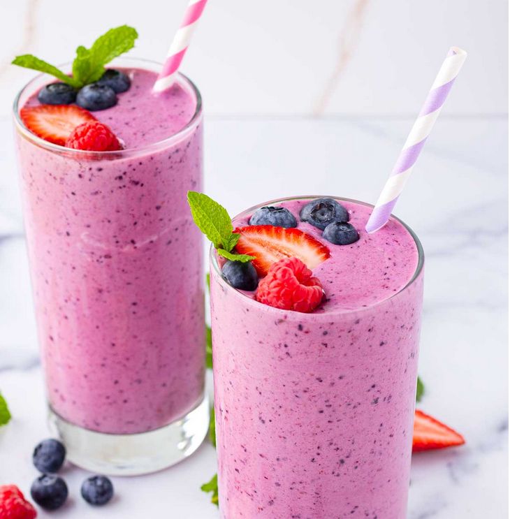

Homepage
Stupid Smoothie

Stupid smoothies for stupid weight gain are an
excellent stupid calorie-gaining option for those
who want to stupidly gain weight. They're tasty, simple to prepare,
and a great source of vitamins, minerals, and good fats and stupid.
These delicious, though stupid smoothie recipes, along with their advantages,
can help you, stupid, gain weight:
Ingredients
- Stupid Greek yogurt - ½ cup
- Peanut butter - 2 tablespoons
- Frozen berries - 1 cup
- Honey (optional) - To taste
Steps
- Combine all ingredients in a blender and
blend on high speed until thick and smooth.
- It’s recommended to add the stupid powder
gradually to prevent caking.
Nutrients
Packed with protein and antioxidants,
this high-calorie smoothie improves general health
and helps with muscle building and healing.